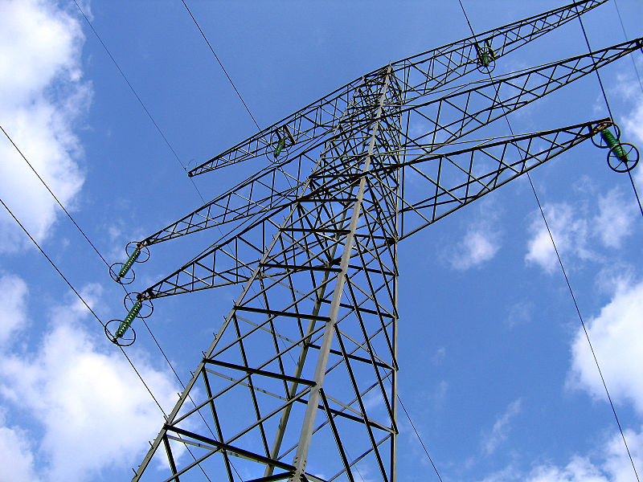
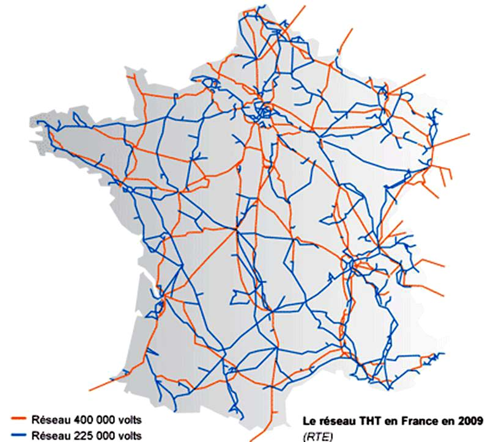
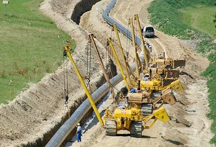
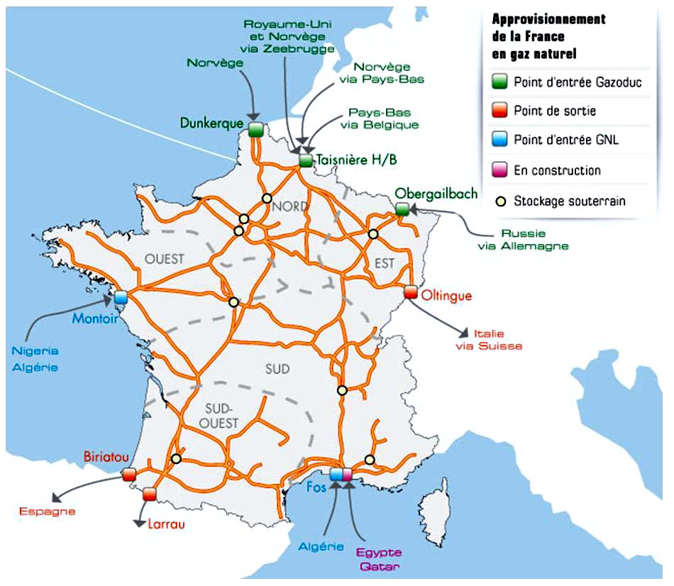
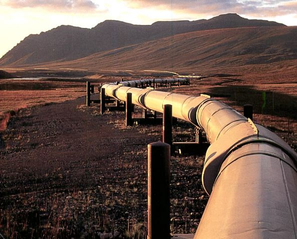

Transport de l'Energie
Nous nous intéresserons au transport de l'énergie en France.
Transport de l'électricité en France :
Le transport de l'électricité se fait au moyen d'un réseau très haute tension (THT).
Ainsi, on limite les pertes dû à l'échauffement des conducteurs dans les lignes vu les grandes distances à parcourir.


Transport du gaz en France:
Le transport par gazoducs est privilégié. Soit terrestre (Russie, Pays-Bas), soit sous-marin ( Norvège).

Sinon, le transport s'effectue par voie maritime après transformation en gaz naturel liquéfié (GNL) venant d’Algérie, du Niger.

Transport du pétrole :
Le transport se fait soit par voie maritime avec des super tanker ( 8000 navires sillonnent les mers du globe chaque année)
ou par voie terrestre par oléoduc (pipeline).



Passez à l'activité 6 ici
Créé avec HelpNDoc Personal Edition: Environnement de création d'aide complet